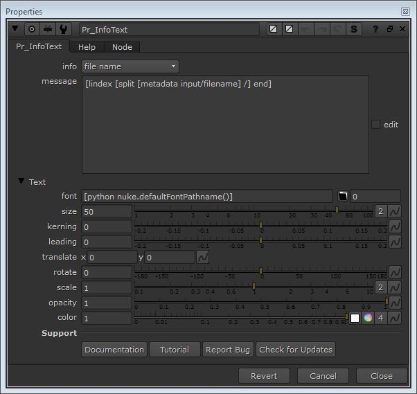

Description:
Pr_InfoText is a information displaying tool which takes the metadata from your image, nuke script and other resources and displays it in viewer and gives you control to modify the way information is displaying. Pr_InfoText will come handy if you are building your own information slate.

Inputs:
•Pr_InfoText has only one input which takes a image on which information is to be displayed.
Special Note:
•File frame range and colorspace - If you have selected file frame range or file colorspace in info then make sure you don't have any another node connected between read node and Pr_InfoText, otherwise Pr_InfoText will not be able to provide you with the information.
Tutorial:
Tutorial Link - https://youtu.be/S-CyLOXtUqg